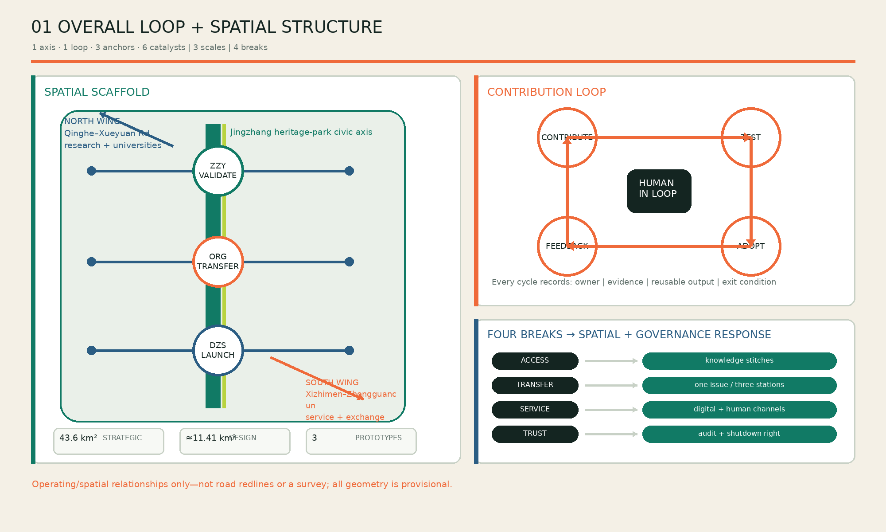
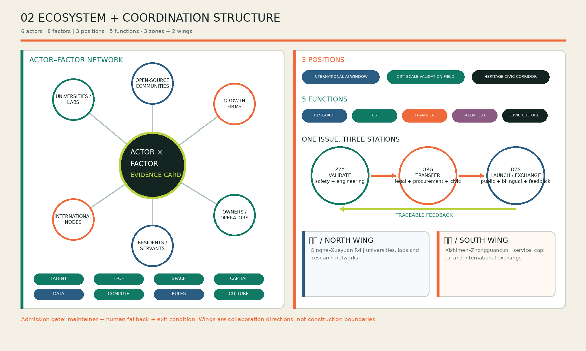
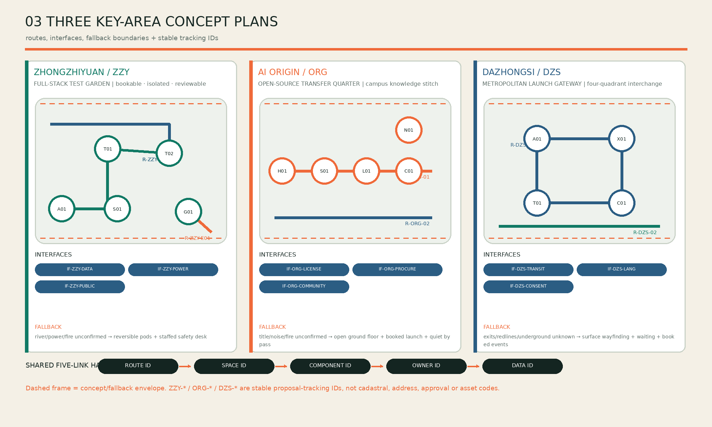
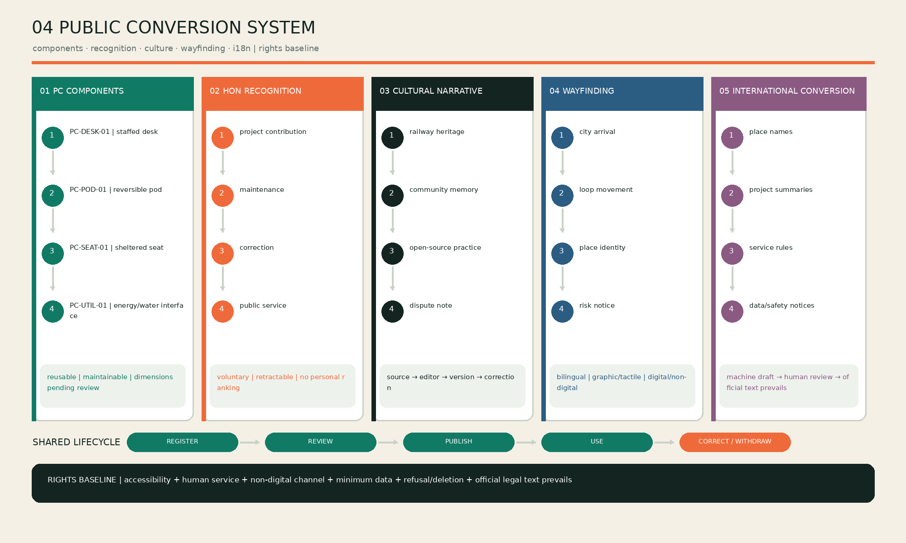
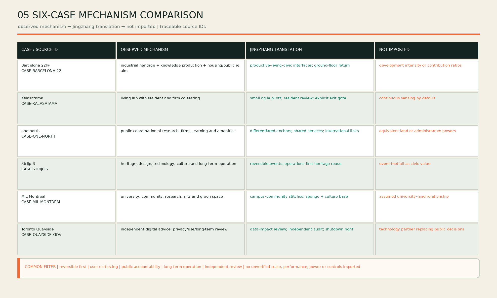

Zhongzhiyuan
VALIDATION ZONE
- Isolatable testing and ecological buffer
- Staffed safety desk and shutdown plan
- Output: VALIDATION-PACK
The heritage park is public ground; Zhongzhiyuan validates, AI Origin adapts and Dazhongsi releases. Every civic-AI issue must leave evidence for admission, validation, adoption, release, feedback and exit.
From metrics.json and submitted GeoJSON. These are not approved planning controls and must be recalculated when official geometry arrives.
The open ring permits entry, correction and exit; the railway pair overlays north–south heritage with east–west knowledge stitches; contribution pulses make feedback visible.
An issue moves through safety/engineering, licence/procurement/community adaptation and public release/international interpretation before feedback returns.
All three extents are provisional. Route, space, component, owner and data IDs support proposal tracking only; they are not addresses, cadastral references, approvals or asset codes.
Machine-readable master: assets/implementation-chain.json. Every gate declares inputs, responsibility, output and failure action.
Need, maintainer, spatial host, public interest and exit condition.
Missing: no public deploymentIsolation, retest, data inventory, load and shutdown.
Fail: fix, retest or closeLicence, procurement, objections and staffed fallback.
Fail: narrow or stopBilingual, accessible, informed choice, deletion and exit.
Fail: return to G2Issues, takeover, incidents and maintenance reviewed annually.
Decide: continue / adjust / exitFigures support human review; geometry, metrics and matrices remain the primary evidence for recalculation and compliance.





A fast read of what is supportable, what remains missing and what must rerun after change.
Three areas, five gates, handover artifacts, accountable roles, phase preconditions and failure fallbacks are recorded in implementation-chain.json.
Official boundary, controls, title, road redlines, utilities, flood, fire, heritage, transport capacity and funding commitments.
The four gates are persisted in self_check.json. This cockpit makes no independent approval or engineering-feasibility claim.
After official data replacement rerun: geometry → metrics → implementation interfaces → five figures → HTML/PDF → self-check.
Sources and assumptions: sources.json, assumptions.json; requirement coverage: compliance_matrix.json; design depth: design_depth_matrix.json.